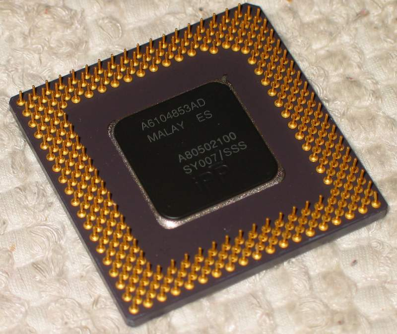

PROCESORY

Co to w ogóle jest ? Procesor (ang. central processing unit, CPU) to sekwencyjne urządzenie cyfrowe, które pobiera dane z pamięci operacyjnej, interpretuje je i wykonuje jako rozkazy.
Procesory wykonywane są zwykle jako układy scalone zamknięte w hermetycznej obudowie, często posiadającej złocone wyprowadzenia (stosowane ze względu na odporność na utlenianie) i w takiej postaci nazywa się je mikroprocesorami – w mowie potocznej pojęcia
procesor i mikroprocesor używane są zamiennie. Sercem procesora jest monokryształ krzemu, na który naniesiono techniką fotolitografii szereg warstw półprzewodnikowych, tworzących, w zależności od zastosowania, sieć od kilku tysięcy do
kilku miliardów tranzystorów. Jego obwody wykonywane są z metali o dobrym przewodnictwie elektrycznym, takich jak aluminium czy miedź.
źródło: https://pl.wikipedia.org/wiki/Procesor
Na rynku posiadamy dwóch głównych producentów:
AMD
Intel